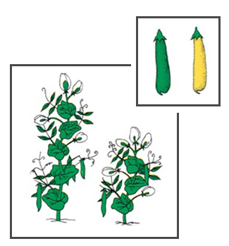
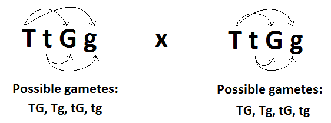
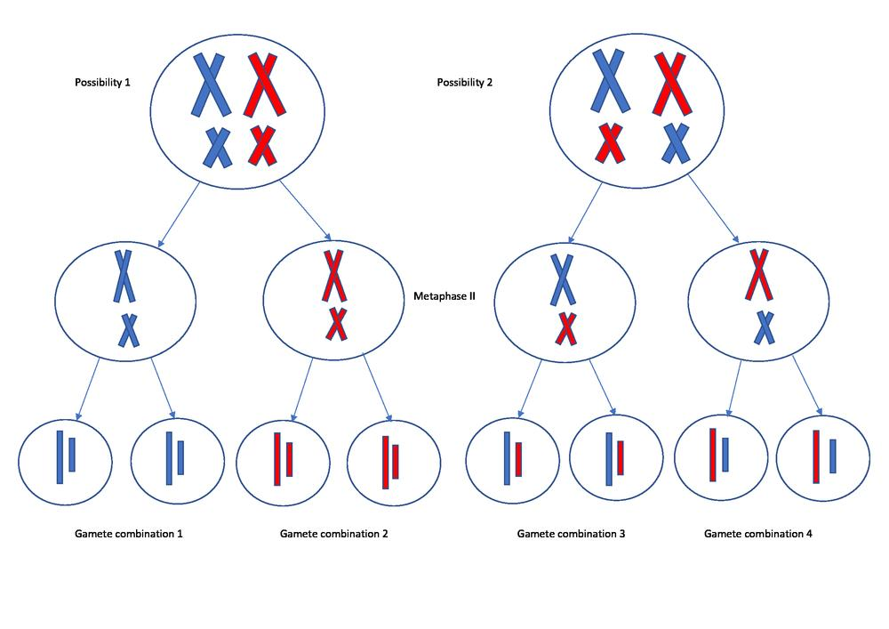
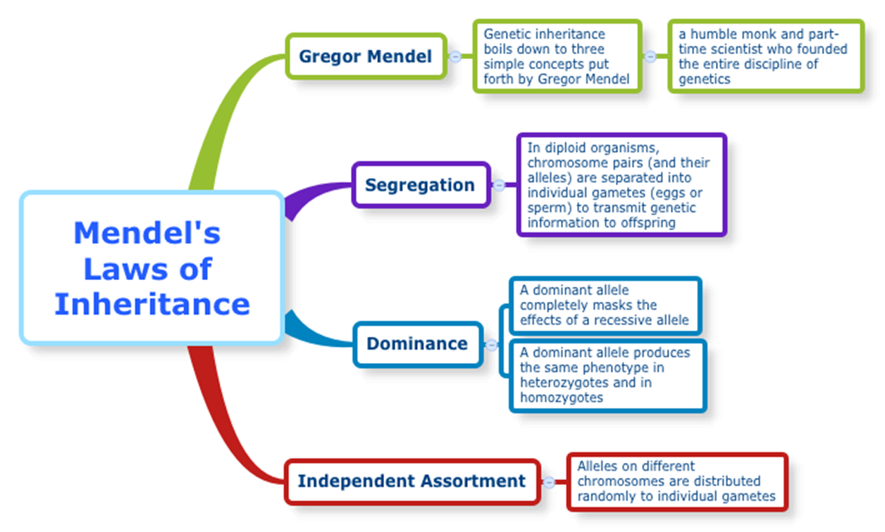
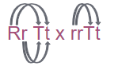
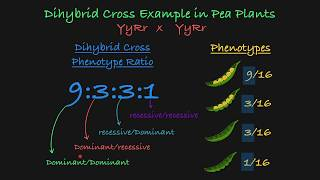

○Two trait crosses including dihybrid crosses
○Independent assortment
Textbook pgs. 591-593
TOPIC 2: TWO TRAIT CROSSES
Dihybrid Crosses
Mendel also conducted experiments to determine whether the pattern of segregation of alleles for one gene had any influence on that of another gene…
E.g. Plant size and pod colour:
Are plants with the “tall” allele just as likely to have the allele that encodes green pods as the allele that encodes yellow pods?

Two true-breeding plants for two different traits are crossed…
ttgg

F1 Generation:


Like in the F2 generation of Mendel’s monohybrid crosses, crossing of
F1 individuals produces a predictable phenotypic ratio in the F2 generation of dihybrid crosses as well…
F2 Generation:


Because such crosses consistently yielded this 9:3:3:1 ratio, Mendel concluded that the segregation of alleles for one gene had no influence on the segregation of alleles for another gene…
This is known as Mendel’s Second Law, or the Law of Independent Assortment:
The two alleles for one gene segregate independently of alleles for other genes during gamete formation.
Law of Independent Assortment
The two alleles for one gene segregate independently of alleles for other genes during gamete formation.
Recall these diagrams from your notes on meiosis II where we discussed how chromosomes line up independently of one another during metaphase I. Take a moment to reflect on how this connects to the Law of Independent Assortment.


Now we have addressed all three laws of Mendel:

TWO TRAIT CROSSES
Example 1:
In tomatoes, red fruit is dominant to yellow fruit, and tall plants are dominant to short plants. A plant that is heterozygous for both traits is crossed with a plant that is heterozygous for the gene encoding height, and homozygous recessive for the gene encoding fruit colour.
a)What are the phenotypes & genotypes of the plants being crossed?
‘Red fruit is dominant to yellow’ so let’s use ‘R’ to represent red and ‘r’ to represent the yellow allele.
Similarly, if ‘tall is dominant to short’ let’s use ‘T’ to represent the tall allele and ‘t’ to represent the short allele.
So the parents phenotypes and genotypes are:
| genotype | phenotype |
Plant that is heterozygous for both traits | RrTt | Red and tall |
Plant that is heterozygous for height and homozygous recessive for color | rrTt | Yellow and tall |
TWO TRAIT CROSSES
Example 1:
In tomatoes, red fruit is dominant to yellow fruit, and tall plants are dominant to short plants. A plant that is heterozygous for both traits is crossed with a plant that is heterozygous for the gene encoding height, and homozygous recessive for the gene encoding fruit colour.
Step 1 with a cross is to identify the genotypes of the parents. This we have already done in part a:
RrTt x rrTt
Step 2 is to identify the possible gametes and set up the Punnett Square. Not all two trait crosses will require a large 4x4 Punnett Square. Just identify the possible gametes and construct accordingly.
Rr Tt x rrTt
So parent 1 can make the RT, Rt, rT, and rt gametes, while parent 2 can only make rT and rt gametes.
There is no need to consider the other four combinations because they will be repeat and will not impact the ratio.
b. What proportion of offspring will be…
○tall with red fruit?
○tall with yellow fruit?
○short with red fruit?
○short with yellow fruit?
TWO TRAIT CROSSES
Example 1:
In tomatoes, red fruit is dominant to yellow fruit, and tall plants are dominant to short plants. A plant that is heterozygous for both traits is crossed with a plant that is heterozygous for the gene encoding height, and homozygous recessive for the gene encoding fruit colour.
Step 3 Use the gametes to set up and fill out a Punnett Square
Tip: use lots of space for your Punnett square so you can color code or fill out phenotypes directly in the boxes.
| rT | rt |
RT | RrTT Red and tall | RrTt Red and tall |
Rt | RrTt Red and tall | Rrtt Red and short |
rT | rrTT Yellow and tall | rrTt Yellow and tall |
rt | rrTt Yellow and tall | rrtt Yellow and short |
Step 4 Use information to answer question.
b. What proportion of offspring will be…
○tall with red fruit? 3/8
○tall with yellow fruit? 3/8
○short with red fruit? 1/8
○short with yellow fruit? 1/8

TWO TRAIT CROSSES
Example 2:
In summer squash, white fruit color (W) is dominant over yellow fruit color (w) and disk-shaped fruit (D) is dominant over sphere-shaped fruit (d). A plant that produces yellow, disk-shaped fruit is crossed with a plant that produces white, sphere-shaped fruit.
a)What are the potential genotypes of the plants being crossed?
We know that the parents display some of the dominant phenotypes, but we don’t know just yet whether they are homozygous dominant or heterozygous for those traits, since both cases would display the dominant phenotype. We can represent this unknown allele by the line:
wwD_ x W_dd
b) Some of the offspring have yellow, sphere-shaped fruit. What does this tell us about the genotypes of the parents?
The genotype of these offspring with yellow, sphere-shaped fruit must be homozygous recessive for both traits, so wwdd. This is only possible, if BOTH parents had a copy of both w and d alleles.
So the parent cross must be:
wwDd x Wwdd
TWO TRAIT CROSSES
Example 2:
In summer squash, white fruit color (W) is dominant over yellow fruit color (w) and disk-shaped fruit (D) is dominant over sphere-shaped fruit (d). A plant that produces yellow, disk-shaped fruit is crossed with a plant that produces white, sphere-shaped fruit.
c) If this parental cross produces 80 seeds, how many of those seeds would give rise to
| Wd | wd |
wD | WwDd White and disk | wwDd Yellow and disk |
wd | Wwdd White and sphere | wwdd Yellow and sphere |
wwDd x Wwdd
●White flowering squash?
●Squash with yellow and sphere-shaped flowers?
Portion of seeds that will give rise to white flowering squash is 2/4 or ½ or 0.5. To calculate the actual number of squash, we simply multiple the total number by this decimal value:
80 x 0.50 = 40 squash
¼ = 0.25
0.25 x 80 = 20 squash
Two Trait Crosses Recap
➢This was a short lesson, but ensure that you do all of the assigned practice before moving on, as more complexity is coming. You want to feel comfortable working with one trait and two trait crosses for these ‘simple’ dominant/recessive allele relationships
Note: You don’t actually need to do a 4x4 punnett square for the example in the second video. If you notice, each column will look the same!
